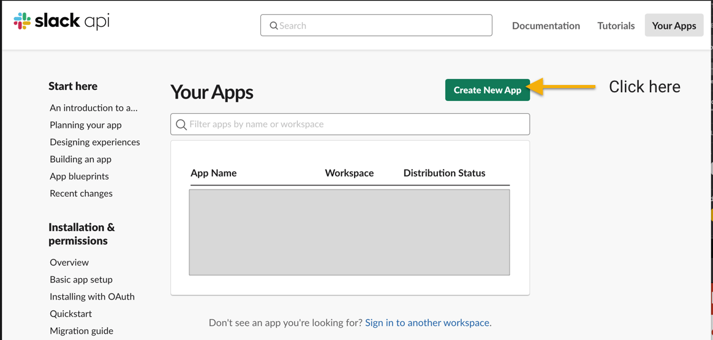

Slack integration
Connect your Loomio group notifications to Slack.
Loomio can send notifications into your Slack channels when new discussions, proposals, comments, votes, and outcomes occur. Get key updates, at the right time, on important discussions and decisions.
Start by visiting https://api.slack.com, signing in if you are not already, then clicking Create New App

Give your Slack app a name

Add incoming webhooks support

Then enable the function

Then add a new webhook

Select a channel

Copy the webhook URL to your clipboard

Now that you have a Webhook URL, continue setting up your chatbot over here:
Loomio is not created by, affiliated with, or supported by Slack.